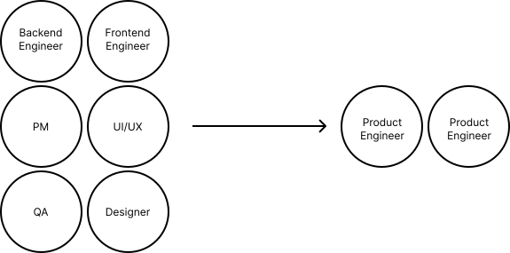

"I think the contract work trend is going to increase, and I think the size of your average company is going to decrease. I think we're going to see more and more billion dollar businesses built by four or five people, and it'll stay that way."
That's Naval Ravikant in 2012 talking about the future of companies. I'm not sure I would have agreed with him until 2022.
What's Happening Now
AI is changing how companies (from startups to F500s) hire and structure teams. Startups are getting smaller. Solo founders are becoming more common. Browse X and it doesn't take long to find examples of single-person software companies pulling in huge MRR by outsourcing work to AI. The days of heavily VC-funded SaaS apps are over. Small, scrappy teams are proving they can build real apps.
The big boys are changing things up as well. Tech layoffs continue. Salesforce has stopped hiring software engineers. There's uncertainty about if we will even need more engineers in the future and, if we do, what skills do we want them to have?
For the time being, senior-level expertise seems to be the least impacted by layoffs and hiring freezes. In Addy Osmani's article on "The Next Two Years of Software Engineering", he points out that when companies start building with AI, they stop hiring juniors but keep hiring/retaining senior talent.
When junior-level tasks are automated, what companies really need are people to work intelligently with AI's output and input. To validate the code it writes and prompt it precisely to build great software.
As the range of work AI can accomplish expands, the economics of employing someone with a narrow skillset become more challenging. AI-driven development favors T-shaped engineers who have deep technical expertise in a vital areabut also the ability to build across the entire product.
LinkedIn recently decided to delete their APM (Associate Product Manager) program and replace it with an "Associate Product Builder" (APB) program. The goal of this 2-year rotation is for members to graduate and become "Full Stack Builders", a new position at the company that operates "across product, design, engineering, and business". Full Stack Builders operate on small, agile teams where they autonomously ship features at a much faster pace than traditional software teams.
A similar role that has emerged out of the startup world: Product Engineering. Incident.io, fly.io, Ashby, and PostHog all have product engineers on staff. Product engineers are true "Full Stack Builders". They decide what their roadmap looks like, they build the features, ship them and learn from the user feedback. They are impact oriented, they are customer-obsessed and focus on the overall product experience rather than just the technical performance of their code. They often still collaborate directly with product managers and traditional software engineers. The PMs provide market and user context and the SWEs provide technical guidance and expertise.
Predictions
Software teams will shift from teams of specialists to small teams of builders with diverse skillsets. Imagine a 2-person product engineering team with an ex senior backend engineer and an ex world-class designer aided by cutting-edge LLMs. Even at current capabilities this team could produce enterprise-grade SaaS apps faster than 90% of larger, traditional teams.
This shift will happen organically in startups but will likely need to be spun up in parallel in larger organizations (e.g. APB program at LinkedIn). By lowering the number of team roles and concentrating ownership, you reduce collaboration (which sucks btw) and speed up your development time. In large organizations, these teams will start shipping small apps and features, and as they prove out their capability, the new team structure will become the default SOP across the engineering organization.
That being said, highly technical engineering teams are not going away. I don't think you will be able to vibecode Netflix's global video delivery system anytime soon. Which is why highly technical engineers can stay narrow for the foreseeable future. The rest of us will have to adapt.
What You Can Do To Prepare
Everyone should be using AI to do their work. It's the most important way to prepare for the future. Those who hold out will face a steep learning curve when adoption becomes unavoidable.
But becoming a great AI coder isn't enough. A new renaissance is upon us. Claude Code is our humanism and Codex our printing press. It's time to become a builder of products, not just a programmer, designer or product manager.
If you're an engineer you can start to develop your product sense. Read PM books. Subscribe to Lenny's Podcast. Practice thinking like a product manager. What PM responsibilities can you take on in your current role? Learn about Design and UI/UX, what makes an app delightful to use? What makes an app feel cluttered? What makes it beautiful?
PMs and Designers should start using LLM tools to build apps. Read about databases and distributed systems. Learn about CI/CD pipelines and how apps are hosted. How is data collected in applications?
The future will belong to those who think they can do it all, because with AI, they just might be able to.